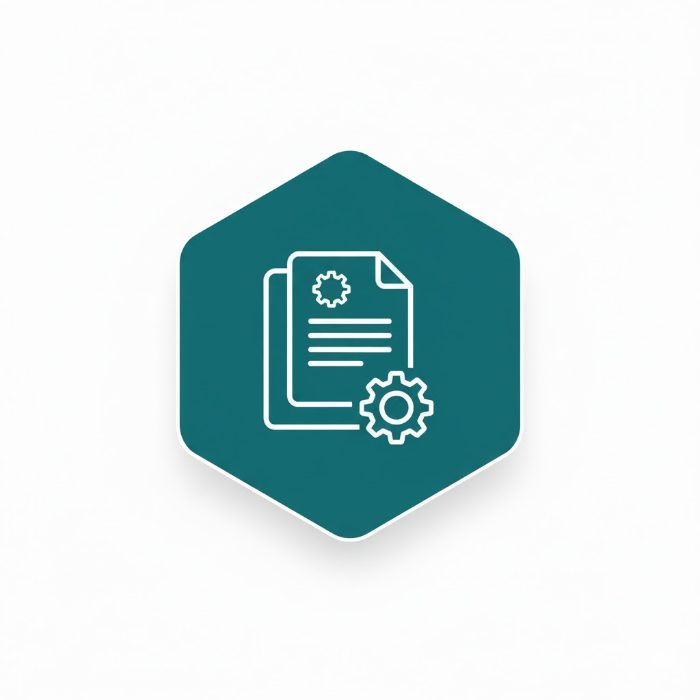
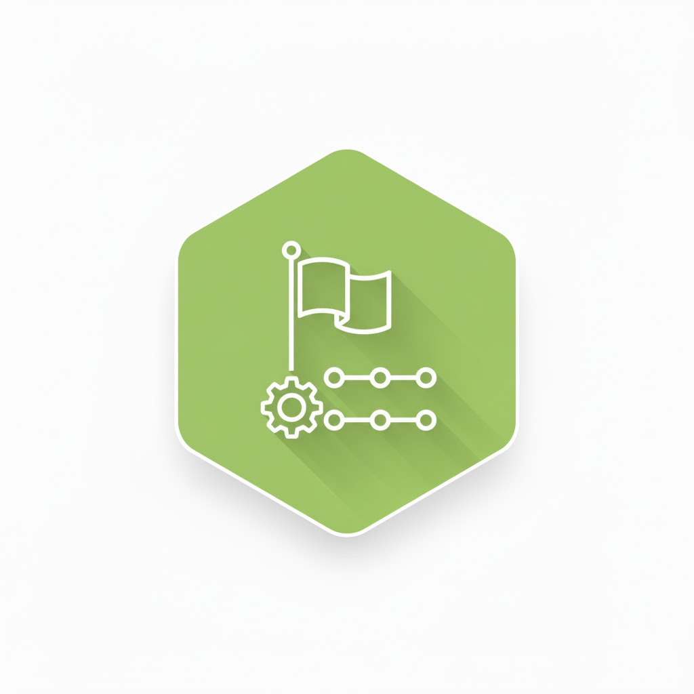
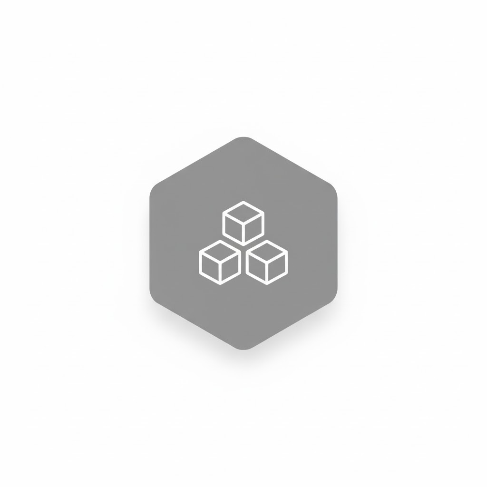
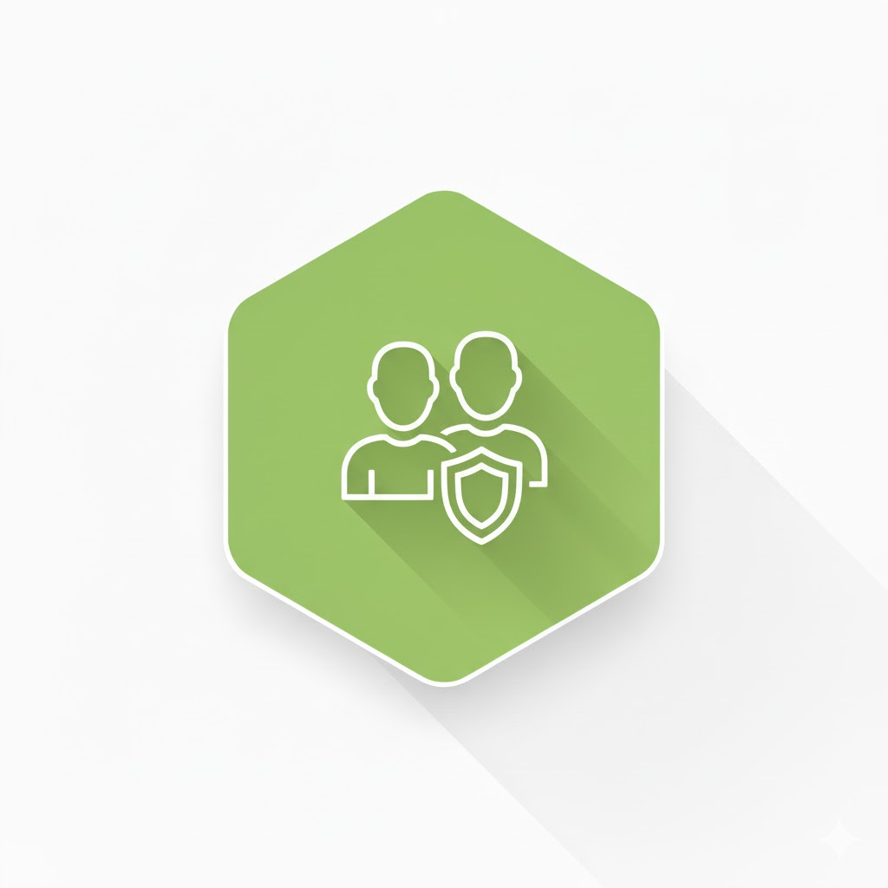

HERMES 22 verständlich gemacht.
Ein Hilfmittel, um die Projektmanagementmethode der Schweizerischen Bundesverwaltung zu verstehen, zu lernen und anzuwenden.
Zu den WerkzeugenDie offene Methode für kleine und grosse Projekte
HERMES 22 ist der offizielle Projektmanagementstandard der Schweizerischen Bundesverwaltung. Er bietet eine klare, skalierbare Struktur für Projekte jeder Grösse – von einfachen Vorhaben bis hin zu komplexen Programmen. Die Methode stellt sicher, dass alle Beteiligten dieselbe Sprache sprechen und Projekte nachvollziehbar und erfolgreich gesteuert werden.
Das HERMES Modell im Überblick
Die Methode liefert vordefinierte Bausteine, die für jedes Projekt per Sizing und Tailoring individuell angepasst werden können.
Das Modell visualisiert die zentralen Elemente, die auf das spezifische Vorhaben zugeschnitten werden:
-

Szenarien
Bewährte Abläufe für ihre Projekte (z.B. IT-Entwicklung), die als anpassbarer Startpunkt dienen.
-

Phasen & Meilensteine
Gliedern den Projektverlauf und schaffen klare Entscheidungspunkte.
-

Module
Bündeln thematisch verwandte Aufgaben und Ergebnisse zu flexiblen Bausteinen.
-

Rollen
Definieren die Verantwortlichkeiten und stellen sicher, dass alle Aufgaben klar zugeordnet sind.
Entdecken Sie HERMES 22 interaktiv
Diese Werkzeuge helfen Ihnen, die Methode schnell zu verstehen und auf Ihr Szenario anzuwenden.
HERMES Navigator
Ein interaktives Tool zur Visualisierung der Phasen, Module und Rollen basierend auf spezifischen Projektszenarien. Ideal für Projektleiter und -mitarbeitende.
Navigator starten →Zusammenhänge verstehen
Erkunden Sie die Beziehungen zwischen Aufgaben, Ergebnissen und Rollen. Finden Sie schnell heraus, wer was wann und wofür benötigt.
Zusammenhänge erkunden →